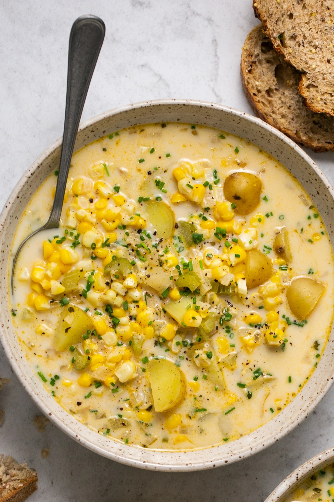

A gathering of some of my favorite recipes to cook

4 ears of corn
3 tablespoons butter
1 cup finely chopped onion
3/4 cup finely chopped celery
2 cloves garlic minced
1 1/2 teaspoons salt
1/2 teaspoon black pepper
1 teaspoon dried thyme
1/8 teaspoon ground cayenne pepper
4 cups chicken broth
1 tablespoon chicken bouillon
12 ounce yellow potato
2 cups milk
2 tablespoons flour slurry to thicken